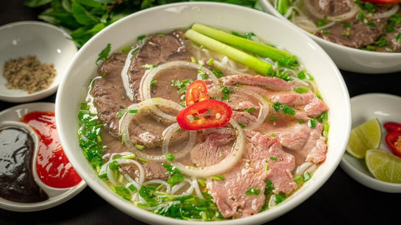

ẨM THỰC
1. Phở Hà Nội
Phở từ lâu đã không chỉ là một món ăn đặc trưng của Hà Nội, mà nó còn mang trong mình “quốc hồn quốc túy”, là tinh hoa của ẩm thực Việt Nam. Không những thế, phở còn được giới thiệu rộng rãi đến bạn bè năm châu và rất được yêu thích. Cái hay, cái ngon của phở không chỉ đến từ miếng thịt thơm ngon, từ sợi bánh phở trắng ngần, từ màu xanh bắt mắt của hành lá mà cốt lõi nằm ở nước dùng tinh túy. Nước cốt chuẩn thì xương và các gia vị sẽ cần phải được hầm ít nhất trong 12 tiếng đồng hồ và mất thêm một số công đoạn nêm nếm làm cho nước dùng được trong và ngọt chuẩn vị, kiểu ngọt chân thật của nhiều xương, tủy tẩy không nồng mà lại nêm vừa mắm muối”, đó chính cái hồn của phở xưa.
2. Chả cá Lã Vọng
Chả cá Lã Vọng là món ăn thể hiện sự tinh tế, cầu kỳ trong ẩm thực của người Hà Thành. Chả được làm chủ yếu từ cá lăng hoặc các loại cá da trơn, cắt thành miếng và nướng trên than rồi lại cho vào chảo mỡ rán lại. Đặc điểm của món chả cá này là thịt không bị bở, và không bị nát dù đảo qua đảo lại rất lâu trên chảo. Ăn một miếng chả cá Lã Vọng thôi mà như cảm nhận hết được vị ngọt bùi của cá và mùi thơm của nó nữa

3. Bún chả
Nhắc đến ẩm thực đường phố Hà Nội thì không thể bỏ qua món bún chả, thức quà mà bất kỳ ai đến với thủ đô cũng phải một lần nếm thử để cảm nhận cái đậm đà của phong vị Hà Thành.
Bún chả cũng đã từng lên tạp trí CNN, được bình chọn là món ăn ngon nhất mùa hè năm 2012. Năm 2014, bún chả - Món ăn đặc sản của Hà Nội lại một lần nữa lọt vào danh sách 10 món ngon đường phố tuyệt vời nhất của các du khách trên tạp trí National Geographic (hệ thống truyền hình phim tài liệu do Hội địa lý Quốc gia Hoa Kỳ sản xuất).
Và nổi tiếng nhất là vào năm 2016, khi tổng thống Mỹ Obama và cố đầu bếp nổi tiếng Anthony Bourdain đến ăn tại quán bún chả Hương Liên tại số 24 Lê Văn Hưu, Quận Hai Bà Trưng, Hà Nội đã từng được rất nhiều báo trí nước ngoài như Telegraph, Dailymail, Munchies, CNN...đưa tin.

4. Bún riêu
Nhớ đến Hà Nội là nhớ đến bún riêu, thứ quà sáng giản đơn mà tinh tế, quyến luyến trong một buổi sáng lạnh se sắt.
Bún riêu ngon hay không, quan trọng nhất là phần nước dùng. Nước dùng chuẩn vị Hà Nội phải có vị chua dịu của giấm bỗng cùng cà chua làm nổi lên vị ngọt nhẹ của cua đồng.
Cua được giã nhỏ rồi cho vào nước, lọc lại thật kĩ rồi mới gạn phần nước cua vào nồi, đun lửa liu riu cho đến khi riêu cua nổi lên thành từng mảng. Nhìn nồi nước dùng đỏ au màu cà chua, lấp lánh những tảng riêu cua vàng rực bốc khói, thật khó kiềm lòng được trước tiết trời Hà Nội bây giờ.

5. Bún thang
Không rõ bún thang có từ bao giờ. Nhưng ở những năm đầu của thế kỷ trước, bún thang được xếp vào hàng món ăn chơi của dân nhà giàu bởi muốn làm ra một bát bún thang đúng nghĩa phải rất tốn kém.
Theo lời kể của những cụ cao tuổi người Hà Nội gốc, nồi nước dùng cho món bún thang được chế biến công phu từ 1 - 2 con gà trống thiến, tôm he chính hiệu Thanh Hóa, ninh kỹ, liên tục hớt bọt để tạo độ trong, ngọt và giữ chất đạm tự nhiên.
Sự hấp dẫn của bún thang còn thể hiện ở cách trình bày. Bát bún là sự hòa quyện của các nguyên liệu như một bức tranh đa sắc. Màu trắng tinh tế của giò lụa thái chỉ cùng những miếng lườn gà xé phay. Màu vàng óng của trứng được tráng mỏng tang như tờ giấy hay da gà ta vàng ruộm. Màu đỏ của tôm he được giã bông như ruốc. Màu xanh của hành lá. Tất cả những nguyên liệu ấy, màu sắc ấy, được bốc và bày gọn gàng lên trên bát bún rối sợi nhỏ, chan với nước dùng thật sôi, khói bốc lên thơm mùi nấm hương, mộc nhĩ, khiến các nguyên liệu nở ra như một bông hoa ngũ sắc.

Bún thang được xem là món ăn tinh tế, chế biến cầu kỳ bậc nhất của người Hà Thành. Chẳng thế mà, trong cuốn “Miếng ngon Hà Nội”, nhà văn Vũ Bằng đã miêu tả bún thang “giống như một bức tranh phong cảnh trong trẻo mà ở đó những mảng màu nguyên chất được đặt gần nhau chứ không pha lẫn”.